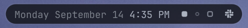

The bar is furniture, and most of the time I want less of it. The pill draws over the wallpaper and reserves nothing; tiled windows get a generated top clearance instead, so the layout is a fact about whichever bar is live rather than a constant in a config file.
Its ground is deepened away from the theme's bar.background rather than taken from it. The wallpaper rotates through 94 images by time of day and weather, and a 22% pass-through of a light wallpaper halves the clock's contrast. So the numbers were measured against all 94, not picked.
- what it is
- A Quickshell bar plugin,
drivetrain.bar, selected bybar-shape. - toggle
- Style › Menu Bar › Corner Pill, or double-click the pill's clock. Hot-swaps, no restart.
- record
- docs/pill-bar.md, the measurement.